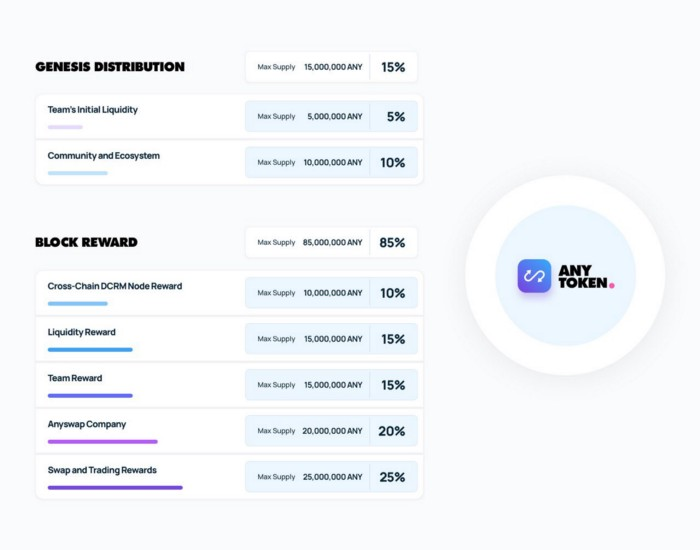

Some General Questions about Anyswap¶
Who are the Anyswap management team?
They are drawn from the Fusion Foundation. The acting CEO is Zhaojun He and DJ Qian is very active in the team.
Where is the Anyswap website?
This is being compiled now and will be released shortly. In the meantime we encourage you to simply use the exchange.
Where is the White Paper of Anyswap?
There is no White Paper, since the Anyswap DEX is fully functioning and Anyswap are not looking for funding.
What is Anyswap DEX?¶
What Features will Anyswap provide?
Decentralized Cross Chain Bridge — Users can deposit any coins into the protocol and mint wrapped tokens in a decentralized way.
Cross Chain Swaps — Users can immediately swap from one coin to another.
Programmed Pricing and Liquidity — Liquidity provider could add and withdraw liquidity into swap pair. The programmed pricing system is based on the liquidity provided.
What is a DEX?
A Decentralized EXchange allows the exchange of value between two or more assets, without the need to send those assets to a Centralized EXchange (CEX) first. When assets are sent to a CEX, they are no longer in your possession. You do not have the Private Key to the assets on a CEX and so you do not actually own them (just like you do not own the money in your FIAT bank). With Anyswap, your assets only leave your wallet, when they are secure under the control of a Smart Contract, since you alone know your complete Private Key.
What pairs are available on the Anyswap DEX?
The exchange is new and at the moment the pairs available are FSN-ANY and FSN-aUSDT. Other pairs will arrive shortly, including aBTC, aETH, aXRP, aLTC, aBNB, aXMR and many more. This is subject to audits having been successfully completed for each chain and to sufficient liquidity provision being available. In the short term all pairings will be with FSN, although users can swap between any two assets such as between ANY and aUSDT as well as the FSN pairs. In these cases, the fees will apply twice (i.e. 2 x 0.4%).
What are the fees for using the exchange?
Users pay Fusion’s gas fee, which is typically less than $0.0001, although it is recommended to keep at least 0.01 FSN for gas in your wallet. In addition users pay 0.4% of the sum being transferred for any FSN pair. Of this 0.3% goes directly to Liquidity Providers and 0.1% goes to Anyswap.
How does Anyswap work without knowing my Private Key?
This is one of the most important aspects of a trustless DEX. Anyswap runs on the Fusion blockchain and uses its DCRM technology. With DCRM, your Private Key is ‘sharded’, or split up with each piece being managed by a different node on the network. To make an exchange of value, a transaction must be signed by each of these nodes, but the important part is that the PRIVATE KEY IS NEVER ASSEMBLED and so the transaction cannot happen without all of these nodes colluding. This is the safest non-custodial way of sending assets. When you want to make an exchange of value on Anyswap, you must either authorize the transaction using MetaMask, or a hardware device like a Ledger connected to your wallet.
Why is it important that Anyswap’s Smart Contract, Cross Chain Bridge and DCRM are Open Source?
The Anyswap Smart Contract , the Cross Chain Bridge and the DCRM source code can be examined and the applications can be re-created by anyone with a little programming knowledge. In this way users are assured that the code is indeed decentralized and that there are no back doors into the code, or any malicious code that could steal your data or assets. In fact IF THE DEX CODE IS NOT OPEN SOURCE, IT IS NOT DECENTRALIZED. Open Source code can be modified or copied by anyone (providing they comply with the licenses). This is important since the code can evolve and improve and cannot become stranded due to someone dying, or refusing or being unable to continue code development.
What is a Cross Chain DEX?
Anyswap is the first true Cross Chain DEX. With Anyswap you can exchange tokens or coins between any blockchains supporting the ECDSA or EdDSA cryptographic algorithm. This includes more than 95% of all chains, including ETH, BTC, XRP, XMR, XLM, LTC, TRX, XTZ, BCH, BSV, EOS, ADA etc. It also includes any tokens on these chains like ERC20’s. Since Anyswap uses DCRM it does not require any code chnages to be made on any of the blockchains. In this respect it is superior to COSMOS or Polkadot, which we regard as being a ‘compatibility’ standard. DCRM is truly an ‘inter-operability’ standard.
Does Anyswap use Ethereum and why not?
No. Anyswap uses the Fusion blockchain. Fusion was forked from Ethereum in 2018 and includes many extensions and changes to ETH, including the ability to realise the time value of assets by time slicing them to enable derivatives, loans etc. and easy asset creation. Because of its ‘Ticketed Proof of Stake’ (TPOS) consensus, it is fast (blocktimes are 13.2 s) and gas is very cheap (less than $0.0001 per transaction). In the future, Fusion will implement useful Ethereum developments, perhaps including layer 1 sharding and security and efficiency updates.
Why are Fusion addresses the same as Ethereum’s?
Fusion was forked from Ethereum and kept its address format. If you send Fusion’s coin FSN, or tokens on Fusion like ANY to an Ethereum address, you will not see them in an Ethereum wallet like Trustwallet, ot MyEtherWallet because they use a different blockchain (and blockchain ID). YOU HAVE NOT LOST YOUR assets though, since you can simply open a Fusion wallet using the same Private Key, wallet file + password, or hardware wallet (using the ETH extension) and you will see your assets there.
Is the bridge for assets onto Fusion decentralized?
For now the answer is ‘partially’, since the Bridge is controlled by 5 DCRM nodes run by either Anyswap (at different locations), or their auditors Slow Mist. After the election of the Anyswap Working Nodes (AWN’s) by ANY token holders at the end of September 2020, we can say that the Bridge of assets into the Anyswap smart contract will be decentralized. There will be at least 5 AWN’s (maybe many more) added to the DCRM nodes run by Anyswap and these AWN’s can be replaced by votes of ANY token holders.
Tokens and coin pairs supported by Anyswap¶
What coins and tokens will be supported by Anyswap in the short term?
It already supports ANY, USDT and FSN. It has been mentioned that the exchange will soon have ETH, BTC, XRP, XMR, EOS, ADA, LTC and a few other major chains. This is not fixed and they will not come in this order and they will be listed one by one.
What coins and tokens will be supported by Anyswap eventually?
This is to be decided by ANY voting for each pair.
Can Anyswap support ERC-20 tokens?
Yes.
Why not list tokens and coins quickly?
Each new blockchain will be audited by Slow Mist before being eligible for listing on the exchange. Another reason to move more slowly is that it is essential that sufficient liquidity be available to support each pair. This will require a discussion with each blockchain community, exchanges, or other parties.
Can I list my company’s token on Anyswap?
Please contact Anyswap to discuss this. Listing decisions will require a mojority of ANY holders to support the listing.
Can anyone simply create a pair on Anyswap?
No. The support of ANY holders will be required to list on the exchange. The precise rules will be decided by voting and will likely result in a balance between ease of listing and avoidance of scam token listings as we see on other DEX’s.
Who is currently providing liquidity for Anyswap?
Ordinary liquidity providers, as well as Hotbit. Further liquidity will be provided by other entities in due course.
Wallets supported by Anyswap¶
What wallets does Fusion and Anyswap support?
The official Fusion wallet is MyFusionWallet but for now, we recommend that you use the Fusion Open Source Community (FOSC) wallet called whallet.net since it does not suffer from a couple of annoying small bugs present in MFW and which, in addition, will receive some significant cross chain enhancements in the very near future. Whallet is open source ( see Whallet github ) and considered safe by the Fusion Foundation. Whallet works well with a hardware wallet such as a Ledger and we recommend that you use one.
If I want to connect my Ledger, what app should I use?
Use the Ethereum Ledger app. It is compatible with the Fusion blockchain.
I’m trying to connect using MetaMask but I can’t see my balances
Most likely you have not set up the custom Fusion blockchain settings. Ethereum will not work. The correct MetaMask settings are as follows :-

How does Anyswap Work?¶

How does a liquidity pool work?
Anyswap uses the “Constant Product Market Maker Model.” If you have a pair on the exchange, then to enter the pool you have to match the USD value of a token, say aToken, with FSN. Let’s suppose that you need A aTokens and F FSN to do this. The way the pool works is that when you multiply A and F, the result is constant :-
A * F = C
This is true, except for the fact that when trades are made, 0.3% of the trade is added to the Liquidity Pool (LP) and so in reality C grows slowly, but let’s ignore this for now. When someone buys aTokens, your proportion of the pool’s aTokens also decreases and so does A. To compensate, F increases. The same happens vice-versa - if someone sells aTokens for FSN to the pool, your A increases and your F decreases.
Why does the price of the asset paired with FSN change?
The price is the token liquidity total value divided by the FSN liquidity total value. This can change dramatically if someone makes a large swap from a small pool, allowing good arbitrage opportunities for quick traders.
What is ‘slippage’ and how can I control it?
Slippage is the change from the displayed swap rate when a swap is actually made. If there is not much liquidity in a pool or the trade is large, then this can be significant. The default slippage value is 0.5%, but you can control this by clicking ‘Advanced Deatils’ below the swap and then setting your own allowable slippage percentage value. If there is not enough liquidity to accommodate your swap, then the swap will fail (small wheel at the top right stops spinning, without the balances changing). There will be no error displayed, instead you either try again, or change the slippage value. Alternatively you can chnage the time to wait by changing the ‘set swap deadline’ value.
What is ANY, the native token of Anyswap?¶
What is the ANY token?
The ANY token is a governance token on the Fusion blockchain. It’s only purpose at the moment is to allow the election of Anyswap Working Nodes (AWN’s), which will take place in late September 2020 and to vote on new coin or token listings on anyswap.exchange. ANY’s are awarded for using the anyswap.exchange platform and for other community rewards and incentives for various aspects of the platform.
Is ANY an ERC-20 Token?
No. ANY is not, since it is a token on the Fusion blockchain. It is a smart contract on Fusion.
Can I see ANY in Ethereum wallets like Trustwallet, or MyEtherWallet?
No. You have to use a Fusion wallet like whallet.net
Can I send ERC-20 tokens to anyswap.exchange?
No. It is not on Ethereum, so you cannot. Anyswap works on the Fusion blockchain.
How do I send ANY tokens, or other Bridged assets like aUSDT to another wallet?
Use whallet.net
Where can I buy ANY?
You can buy ANY on anyswap.exchange of course, with its FSN-ANY pairing. You can also buy ANY on the Hotbit CEX with its hotbit USDT-ANY pairing.
What is the current price of ANY?
You can see candlestick charts for anyswap.exchange at Markets at anyswap.exchange
Can I get ANY from Uniswap?
No. This is a scam, since ANY is not an ERC-20 token. Anyswap runs on the Fusion blockchain, not Ethereum. Please do not buy ANY tokens from Uniswap, since they will have no value.
What is the contract address for ANY?
0x0c74199d22f732039e843366a236ff4f61986b32 You can see the data relating to the contract at ANY contract address
How can I see the transactions for my address relating to FSN?
Go to https://fsnex.com/address/<put your Fusion address in here>
How can I see movements of ANY and other tokens in the smart contract to and from my address?
Go to https://fsnex.com/address/<put your Fusion address in here> and then click on ‘Token Transfers’
How can I see the balance of assets for my address in the smart contract?
Go to https://fsnex.com/address/<put your Fusion address in here> and then click on ‘Tokens’. You will see any assets locked into liquidity here also.
Tokenomics of ANY¶
{kind=link}
Where can I find data about the ANY token?
The token is still new and so the data is incomplete, but you can find token data here :-
What is the Total Supply of ANY?
100 million is the Fully Diluted token supply.
What was the Initial Supply of ANY?
15 million. This comprises of 5 million in initial liquidity provision when the platform was launched and 10 million for ‘Community and Ecosystem’, to be allocated to grow the Anyswap ecosystem and user base. This amount is available to the team to allocate.
How is the remaining 85 million to be allocated?
The remaining tokens will be allocated to block rewards, locked in an Anyswap Block Rewards Smart Contract ; distributed along with fusion network blocks as follows:
10 million ANY for “Cross Chain DCRM Node Rewards“. The “Cross Chain DCRM Node Rewards“ funds will be used to motivate Anyswap Working Nodes (AWN) to provide stable and secure cross-chain service.
15 million ANY for “Liquidity Rewards”. The “Liquidity Rewards” funds will be used to motivate liquidity providers to provide strong liquidity of swap pairs on Anyswap like BTC, ETH, USDT, XRP, LTC, FSN, etc.
15 million ANY for “Team Rewards” . The “Team Rewards” funds will be used to motivate Anyswap team and future team members.
20 million ANY is allocated to the shareholders of Anyswap company.
25 million ANY for “Swap and Trading”. The “Swap and Trading” funds will be used to motivate swap traders.
What is the current Circulating Supply of ANY?
Until coinmarketcap and coingecko properly reflect the supply of ANY, we can use the ANY contract to calculate the Circulating Supply. Go to the ANY contract address and subtract the top 6 address balances from 100 million. The Circulating Supply of ANY increases every day, since it is used for trading and liquidity provision rewards. The Circulating Supply is currently (06/09/2010) a little more than 7 million.
What is the Market Cap of ANY?
The MC is the Circulating Supply (see above) multiplied by the price, which you can see on anyswap.exchange. The current MC is about $8 million (06/09/2010).
Total rewards for Anyswap¶
At what rate are the 85 million ANY locked into the smart contract distributed?
8.5 ANY is distributed for rewards every Fusion block (13.2 s). The total 85 million will therefore be distributed over 10 million blocks, or about 4 years.
How does Anyswap reward traders and liquidity providers?¶
What rewards do traders receive?
Anyswap has differentiated itself from other DEX’s by rewarding trading directly. Every 100 blocks (~ 20 minutes), 250 ANY are awarded to traders, split according to their proportion of the volume in this period. If a user is the only one making a trade within these 100 blocks, they would receive all of the 250 ANY. If there is no swap trade during this 100 blocks, 150 ANY will be rewarded to liquidity providers and 100 ANY will be rewarded to Anyswap Working Node (AWN) runners.
What fixed rewards do Liquidity Providers receive?
Liquidity rewards are calculated on 6600 blocks base. Every 6600 blocks (about 24 hours), 9900 ANY will be rewarded to liquidity providers according to each one’s liquidity portion, System will use the lowest liquidity provided by each providers to calculate the portion. Before AWN’s are elected, the total rewards will be the 9,900 + 6,600 that willl eventually go to the AWN’s. The total daily rewards until the end of September 2020 will therefore be 16,500
How are the fixed liquidity rewards distributed between each pool?
The rewards are split between pools evenly weighted by the number of FSN in that pool, except that a pair with ANY, such as ANY-FSN receives double the rewards and at times there may be promotions to weight other liquidity pairs.
What volume based rewards do liquidity providers receive?
In addition to the fixed ANY rewards, liquidity providers also receive volume based rewards. Every time a trade is made, 0.3% of the trade value is added to the liquidity pool (split between both members of the pair). The liquidity provider will receive their proportion of this reward added to their stake. This happens every 100 blocks.
Is the reward structure fixed for all time?
No. Rewards can be changed using the governance function of ANY through voting.
How can I see the trading rewards?
These are added to the your pool according to your percentage of that pool. If you multiply the number of FSN by the numkber of the other pair, you will see that this product increases as trading happens. You can calculate the dollar value of your pool contribution by multiplying the number of FSN by two and then multiplying it by the price of FSN. If the price of both assets in your pair decreases, so too will the total value of your pool allocation.
How does Anyswap reward the bridging of assets into the smart contract?¶
Who receives rewards for bridging assets?
Anyswap Working Nodes (AWN’s), which will be elected by ANY holders at the end of September 2020.
What rewards will AWN’s receive?
Cross Chain DCRM Node Rewards are calculated on a 6,600 blocks basis (about 24 hours). Every 6,600 blocks, 6,600 ANY will be rewarded to AWN runners.
Who gets the AWN rewards before the AWN’s are elected?
Before any Anyswap Working Node (AWN) is working, these 6,600 tokens will all be rewarded to liquidity providers.
Bridging assets onto and off from the exchange¶
What are the charges for bridging assets onto Anyswap?
There are no charges other than gas fees. Gas comprises of FSN, which is very small (less than $ 0.0001), but users should maintain 0.01 FSN in their wallets. In addition, there are gas fees from the target blockchain, which can be very high in the case of BTC or ETH. For ETH it is necessary to have 0.02 ETH in the wallet.
What are the charges for bridging assets off from the exchange?
A 0.1% gateway fee will be charged to users who use bridge to lock out wrapped assets. In addition, gas is required as per bridging assets onto the exchange.
How long does it take to bridge assets onto and off from the exchange?
This depends on how big the transaction is. For most transactions, in the case of ETH, ERC-20’s or BTC, it will take less than 30 minutes. One hour is quite possible though. For large asset exchanges it may take up to 24 hours to bridge. This depends upon the dynamics of the target blockchain.
How can I track the bridging process?
Please use fsnex.com for the Fusion side, as well as the target blockchain explorers.
Anyswap team rewards¶
What are the Anyswap team rewards?
Team rewards will be vested 9,900 ANY every 6,600 blocks. “Anyswap Company” will be vested 13,200 ANY every 6,600 blocks.